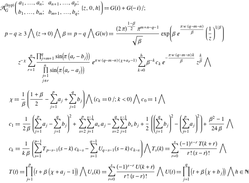

Programação funcional no mundo real com
Clojure
QCon 2013
São Paulo - 30/Ago/2013
Plínio Balduino
A past century software developer

Plínio Balduino
www.casadocodigo.com.br

Programação funcional
Alan Turing / Alonzo Church
década de 1930
Programação funcional
Paradigma
Programação funcional
Paradigma
Forma diferente de pensar
Programação funcional
Função é a unidade básica
Linguagens funcionais
Haskell
LISP
Scala
JavaScript
Linguagens funcionais
Haskell
LISP
Scala
JavaScript
LISP
Inteligência artificial
LISP
Academia
LISP
Parênteses
Matemática
Preciso de um mestrado?
Teorias, termos
Teoria das categorias
- Functors
- Applicative Functors
- Monoids
- Monads
- Arrows
- Semigrupos
- Comonads
Hoje não, obrigado.

Sejamos pragmáticos
Problemas do mundo real